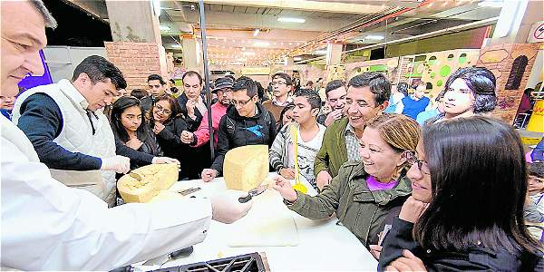
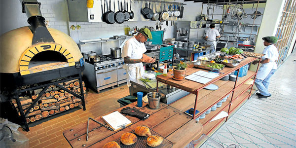
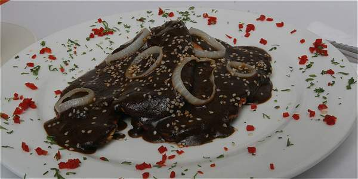
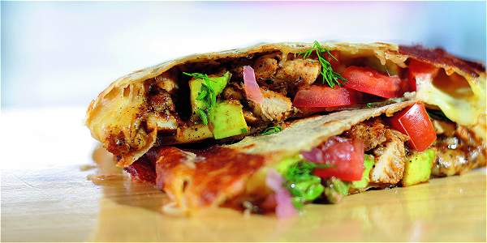

El salon del queso
El fin de semana se celebrará en Bogotá la sexta edición del Salón del Queso. Esta feria dedicada al producto lácteo lleva, con la presente, seis ediciones promoviendo a ese universo paralelo del queso, especialmente el de los maduros y semimaduros, que son distintos a los quesos frescos que han acompañado por años la cotidianidad del colombiano.
Cocina campesina
En este restaurante, situado en el barrio La Candelaria de Bogotá, el menú cambia todos los lunes. Definir un restaurante bajo el concepto de cocinas campesinas del mundo puede parecer muy amplio. Sin embargo, el hilo conductor de Prudencia, en La Candelaria, se basa en técnicas de cocina –que al principio fueron formas de conservar alimentos– comunes en todo el mundo.
Sabores asiáticos

Bares de sushi y diseños contemporáneos de inspiración asiática se están tomando Bogotá. En el último año, los restaurantes de inspiración asiática han revivido en Bogotá: conceptos gastronómicos innovadores, atractivos bares de sushi y diseños contemporáneos forman parte de su oferta. Aquí están los cinco que no se puede perder: Kuru, Osaka, Amen Ramen. Fudo asiatico moderno y Tamarine.
Sabores de México
Los sabores de México invaden en septiembre a Bogotá, con chefs de Nuevo León, Oaxaca y Puebla, se realizará el Festival Gastronómico de México. El cabrito al estilo Monterrey es uno de los platos más tradicionales del norte de México y aunque su origen es español, pues lo trajeron en la conquista quienes se instalaron en la zona nororiental del país azteca, donde hoy están los estados de Coahuila, Nuevo León y Tamaulipas, hace parte de la tradición local gracias a que se prepara con productos de la zona.
Restaurante la Provincia
La Provincia, con sus estatuas de cera que evocan a figuras icónicas costeñas (El Pibe, Los Zuleta y Escalona, por ejemplo) y una colección de objetos que pueden dar cuenta de hitos culturales del Caribe colombiano, tiene también un relato gastronómico. El lugar, abierto en la zona rosa bogotana, tiene un escenario para shows musicales nocturnos, pero también abre al mediodía e hizo de su carta de comida una de sus fortalezas.
Quesadilla mexicana
'Chida', una quesadilla mexicana no tan tradicional. Parra, un cocinero brillante que ha trabajado, entre otros, al lado de Harry Sasson, decidió crear una especie de quesadillas grandes, repletas de queso Oaxaca –tanto así que es el queso el que las sella y les da un toque muy agradable–, con generosas cantidades de alguna carne a manera de relleno, o vegetales asados, y la opción de bañarlas con salsas muy mexicanas, no necesariamente picantes.